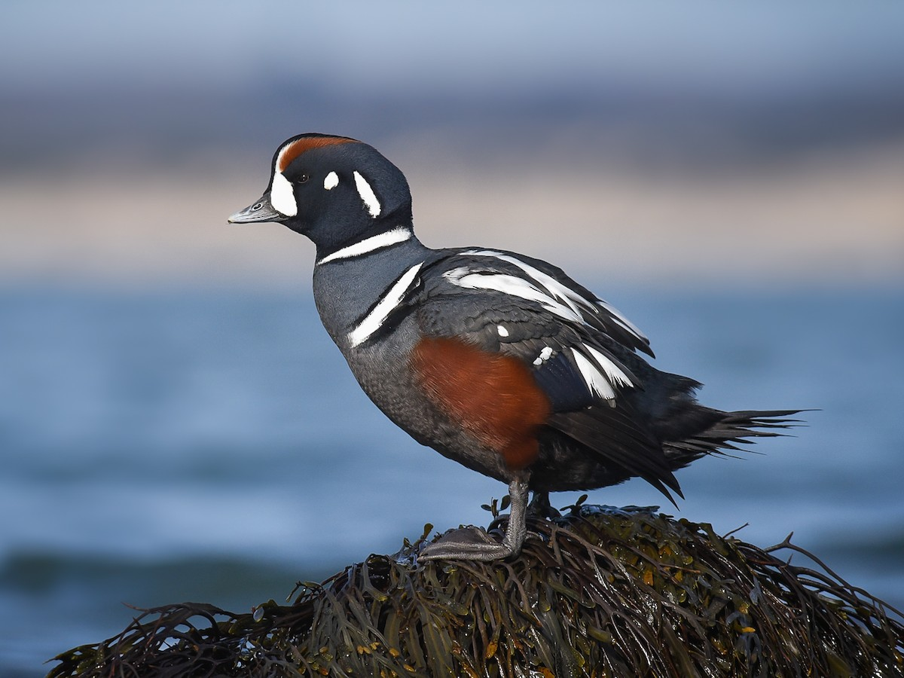

Featured Birds

Killdeer lay their eggs in open areas and will pretend to have a broken wing to distract predators from their eggs.

You can find these birds along mountain streams anywhere between April and September.

These birds are an impressive size. They can range from 3 to 4 feet tall and have a wingspan of up to 7 feet.